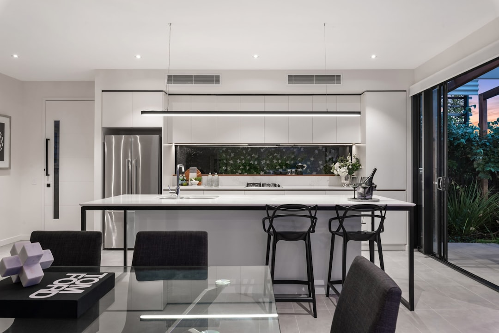

This page treats roller door work as a repair-first job for Brisbane homeowners. It says minor repairs are typically around $90 to $310, depending on the fault and parts needed, and it breaks the work into opener faults, spring repair, remote and keypad programming, off-track repairs, cable and roller replacement, new installation and emergency repair. The enquiry flow is simple: describe the fault, get the right fault check, confirm the repair path, then book the next step.
When a roller door starts sticking, rattling or failing to close properly, homeowners comparing roller door repairs brisbane options usually need a fault-first answer, not a sales pitch. See Roller Doors Brisbane for the current service details.
Roller Door Repairs Brisbane Explained
On the Roller Doors Brisbane page, the work is framed as repair first advice rather than a broad sales pitch. That matters because a roller door problem can come from the curtain, the opener, the spring system, the tracks, the remote, the keypad or a simple hardware issue, and each one needs a different next step.
The page groups the work into roller door repair, opener repair, spring repair, remote and keypad programming, off-track door repair, cable and roller replacement, new garage door installation and emergency garage door repair. A homeowner reading that list does not have to guess whether the issue is mechanical, control related or something that needs replacement straight away.
The page also says repair-first advice is used before replacement is suggested. That keeps the decision tied to the actual fault before any replacement call is made. The practical question is not whether the door is old in a vague sense, but whether the specialist can still fix the part that is causing the problem.
What the page says to tell the specialist
The enquiry form is built around plain details, not jargon. The page asks for your name, phone, email, suburb or postcode and what is happening. It also says those details are only used to process the Brisbane garage door enquiry, which gives the homeowner a clear sense of what the form is for.
The fault description is the part that seems to matter most. The page asks you to tell the specialist whether the issue is a spring fault, opener fault, remote problem, track issue or urgent access problem. It also asks for the door style.
- Describe the symptom as clearly as you can, for example stuck, noisy, sticking or off track.
- Share the suburb or postcode so the job is set in the right Brisbane area.
- Say whether the fault looks mechanical, opener related or electrical.
- Wait for the fault check before deciding whether repair, parts replacement or a new door makes sense.
That sequence keeps the job centred on the real fault.
Repair, replacement and the electrical boundary
The money page does not turn every issue into a replacement. It says the specialist who handles the job checks whether the right answer is service, repair, parts replacement or a full new door. That is a reasonable way to handle a garage door because the value of the repair depends on the fault, the hardware condition and whether the door is still mechanically sound enough to keep.
The page also gives a pricing cue for minor work, saying these repairs are typically around $90 to $310 depending on the fault and parts needed. That is a useful anchor for the first conversation, but it is not a quote and it is not a promise that every job will land inside the same band.
Another important boundary is electrical. The page says that if the job touches hardwired opener wiring or fixed electrical components, a licensed Queensland electrician is used where required. That separates routine mechanical repair from work that needs a licensed electrical response.
Who this applies to
This guide is most useful for homeowners who can tell something is wrong but do not yet know which part has failed. The page opens with examples such as a stuck roller door, opener fault, noisy tracks, broken spring or a garage that no longer secures properly. Those are the situations where a quick description of the symptom is more useful than trying to name the part first.
It also suits people who want a repair-first check before agreeing to replacement. If the door is still serviceable, the page suggests the specialist should confirm that path before anyone moves on to a new door. That is the right filter for a homeowner who wants a practical fix and does not want an unnecessary replacement pushed too early.
The service list also helps with less obvious problems, including remote and keypad programming, receiver issues, limit settings, safety beams, bent tracks, frayed lifting cables and worn rollers. Even when the fault looks small, the page keeps the job framed as a specific diagnosis rather than a generic call-out.
Brisbane coverage and booking
The page says northside, southside, bayside and western suburbs are covered, and it also points to dedicated Brisbane suburb pages so the local context can be handled properly. The examples listed on the page include Chermside, Aspley, Everton Park, Stafford, The Gap, Indooroopilly, Coorparoo, Camp Hill and Carindale.
That structure is helpful because it shows the site is organised around service geography, not just one generic city mention. The page routes different parts of Brisbane through dedicated suburb pages, which is useful when access, housing stock or driveway layout shapes the repair conversation.
Booking is kept simple. The page asks you to send the form, then says a Brisbane roller door specialist will call you back to sort it. If you are happy with the path and the quote, the work goes ahead directly with your roller door specialist.
- Describe the fault. Tell the specialist whether the door is stuck, noisy, sticking, off track, unsafe or not securing properly.
- Share the local details. Give the suburb or postcode and the door style so the job can be matched to the right Brisbane area.
- Get the fault check. Let the specialist check whether the issue is mechanical, opener related or electrical before any work starts.
- Confirm the repair path. If the quote and the repair path make sense, book the next step and proceed with the job.
| Option | Best fit | What to confirm |
|---|---|---|
| Repair | Mechanical, opener or hardware faults that can still be fixed | Ask whether the fault is in the curtain, opener, spring, track or hardware |
| Replacement | Cases where the specialist says a full new door is the better path | Confirm why repair is not the sensible option and what changes |
| Electrical help | Jobs that touch hardwired opener wiring or fixed electrical components | Use a licensed Queensland electrician where required |
Common questions
What kinds of roller door problems does the page cover? It covers roller door repair, opener repair, spring repair, remote and keypad programming, off-track repairs, cable and roller replacement, new installation and emergency repair.
How does the page describe pricing? It says minor roller door repairs in Brisbane are typically around $90 to $310, depending on the fault and parts needed.
When is a licensed electrician used? The page says electrical-opener work is handled by a licensed Queensland electrician where required.
This guide covers repair-first roller door faults, the repair-versus-replacement question, Brisbane coverage and the enquiry steps before booking.